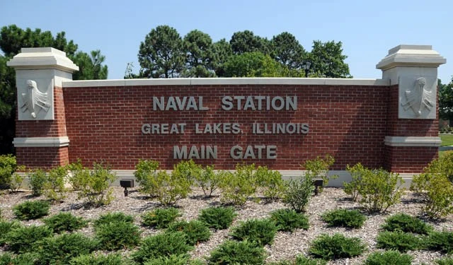
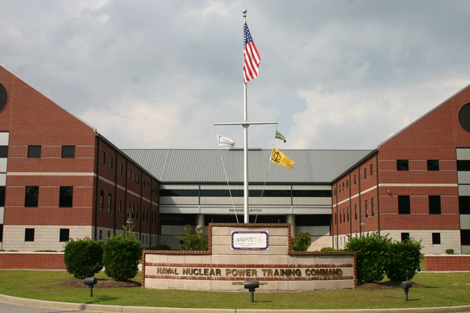
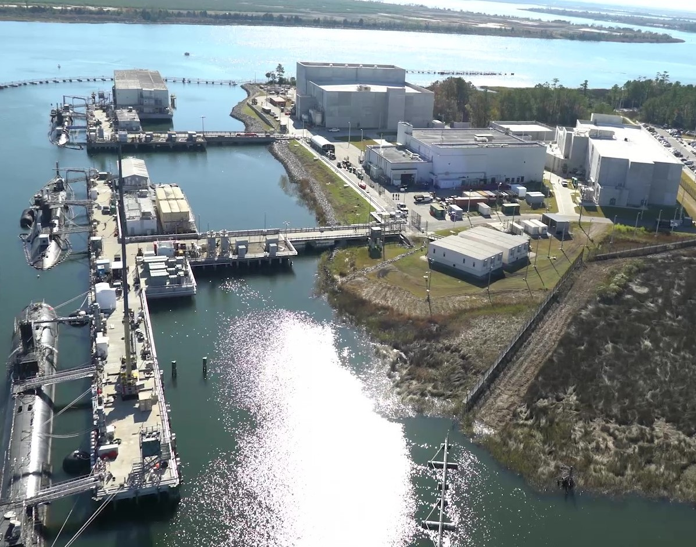
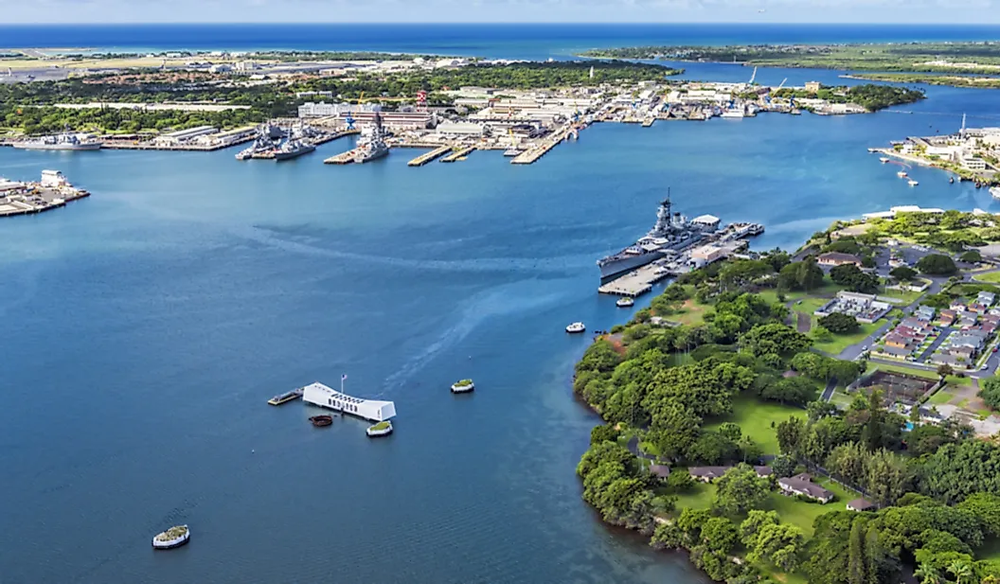
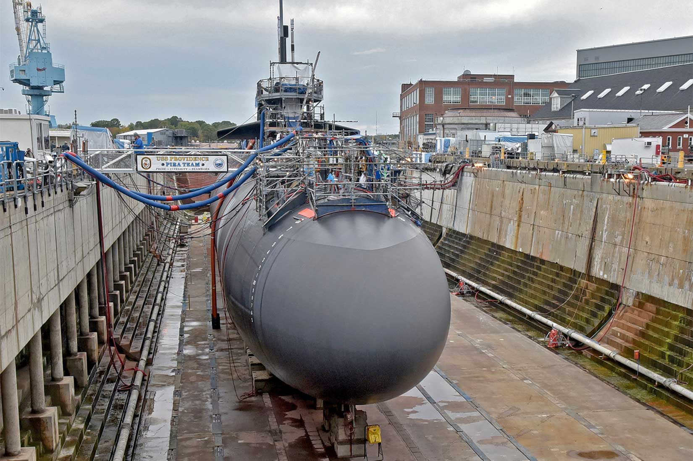
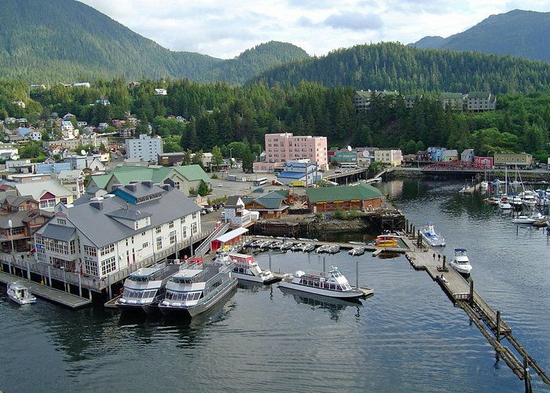
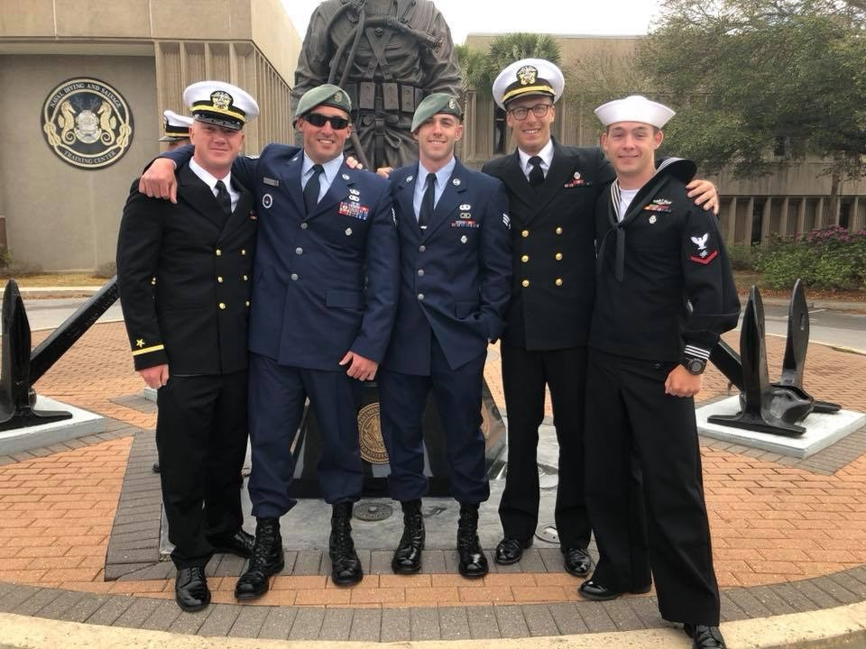
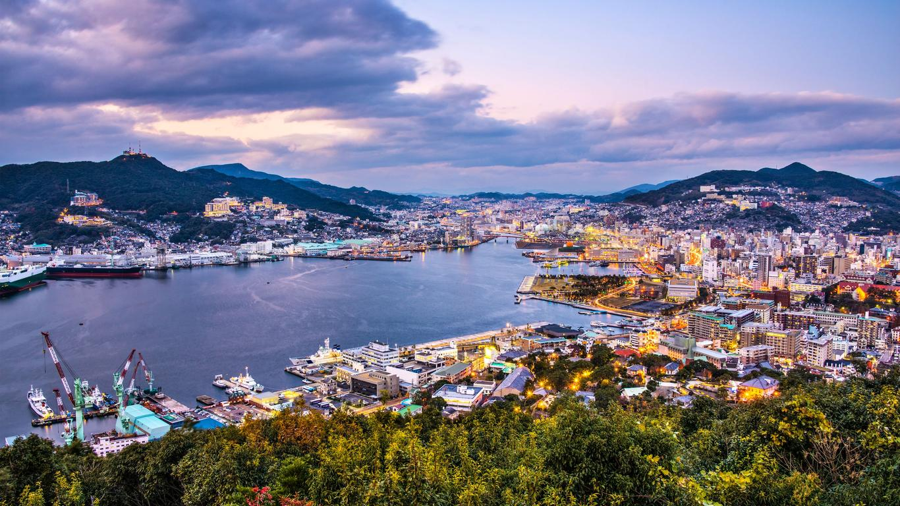
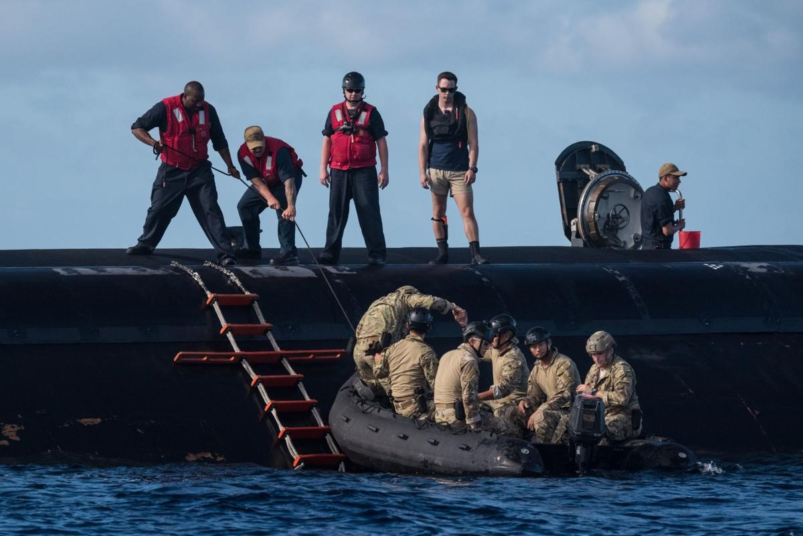

Great Lakes, Illinois
When I joined the NAVY in October of 2014 the first place I went was Great Lakes, Illinois for NAVY Recruit Training Command, also known as bootcamp. It was the first thing I did after graduating highschool and I was unsure exactly what to expect but I knew it wouldn't be easy and if I was able to follow instructions I could make it through. It was a cold time, marching through snow, living on a strict schedule with no connections to anything outside the base. Having worked hard, even though I was just out of highschool, I was given the opportunity to lead a division of 80+ other recruits. Who just 9 weeks later I was happy to graduate with.
Goose Creek, South Carolina
After leaving Recruit Training School I did what all other newly graduated sailors do, I went to my first A-School. A-School is the first school you have that trains you on the basics of your technical rating. Some ratings only have 1 school while others might have 2 or 3 all varying in length depending on how technical your job will be. Some sailor may only have 5 weeks of an A-School before going to their first ship, while others like myself with the rate of Nuclear Electronics Technician had a total of 2 years of various schooling before I'd get to see my first ship.
Having struggled a bit in the classroom environment of highschool this was a very daunting 2 years ahead of me. However, though countless hours of studying, extremely helpful fellow students and equally as helpful instructors I was able to make it through the 3 different phases of schooling required for my techinical rate. Phase 1 and 2 being entirely comprised of classroom lectures monday through friday from 7am to 4pm with required weekly study hours and homework assignments. Phase 3 consisting of a hands on environment where I was able to operate a nuclear reactor on a decommissioned submarine used for training future nuclear operators prior to being stationed on an active duty submarine.
Pearl Harbor, Hawaii
With all required schooling completed I travelled to Hawaii for my first active duty submarine, having already been in the NAVY for 2 years I was ready to do what I had been trained to do. Once I arrived in hawaii I learned my submarine was in a drydock undergoing a maintenance availablity. It would be at least another year before I would be able to go to sea. During that time I became qualified on numberous systems for reactor operation and performed highly technical maintenance on those systems to prepare them for when we would inevitably return to sea. I was also able to use this year to explore the beauty of Hawaii and enjoy living in a tropical paradise.
 Ketchican, Alaska
When time came and the year of nonstop maintenance finally came to an end, it was time to put the boat back in the water. Although the boat was now back in the water the boat was not ready to sail freely. The next year was spent performing many exercises and examinations to certify the ship to go out to open ocean and perform its job. One of the certifications brought us to Ketchican, Alaska where I was able to go ashore for a couple days and see the openness of the beautiful state. We recieved many other certifications to prepare us for our future at sea but this was byfar the most enjoyable.
Panama City, Florida
While stationed onboard the submarine I was given many opportunities for more specified additional schooling. Although not all additional schooling was possible given our ships schedule. The most rewarding one that I was able to attend was NAVY Dive School, where I was trained as a SCUBA diver to perform maintenance on the hull of the submarine while the ship was in water. Unlike previous NAVY schooling I had attended this one was almost entirely physical fitness based and consisted of a lot of swimming, running and strength training type exercises.
Nagasaki, Japan
I spent my remaining time in the NAVY doing local operations at sea around Hawaii as well as 2 Western Pacific Deployments. Where I was able to visit places like Guam, Sasabo, Japan and Nagasaki, Japan. Going to Japan I was able to experiance a new culture. For example in Japan they use yen (¥) instead of what we know as the american dollar($). I was never in any of these places for more than a week or 2, but I surely enjoyed those few weeks away from the months at a time spent underway on the submarine. In all those months I spent a lot of time with the same people and became good friends with most of them. We each had our jobs and we were each necessary to keep the submarine at sea. We perfomed many missions while underway and I was able to meet a lot of new people who were very good at their jobs. Among those were divers, EOD techs, NAVY Seals, Crypto techs and many others.
 